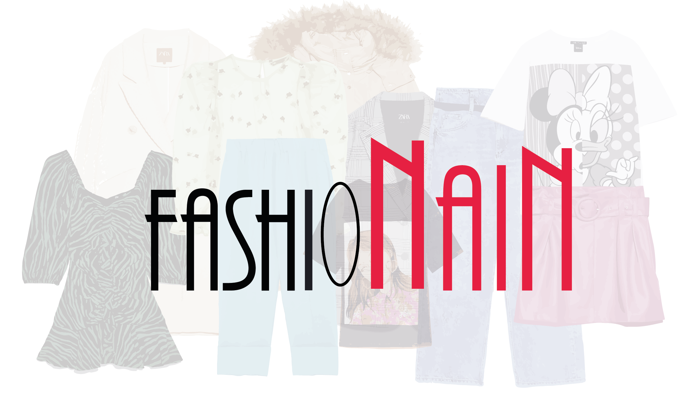
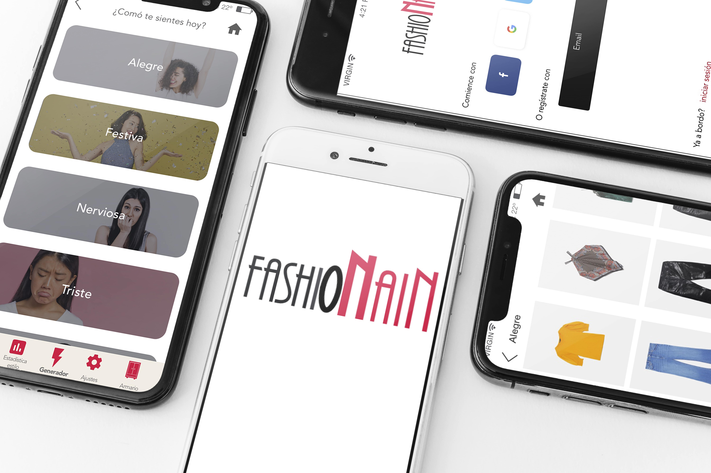

ROL: Diseñadora de producto,UX Designer único.
CONTEXTO: Proyecto personal
HERRAMIENTAS: Sketch, Principle | Overflow
MÁS INFORMACIÓN Medium article
FASHIONAIN se podria resumir en una frase: es una app, que creará outfit con tu propio armario a través de las emociones , con ello se consigue saber perfectamente todas tus prendas y se tendrá un consumo más moderado.
 
Esta app, está pensada para todas aquellas personas que todos los dias tienen una tremenda odisea a la hora de elegir un outfit, ya sea por desorden, por mucha cantidas de ropa, tiempo o que siemplemente no sepa muy bien elegir sus prendas al dia dia.
La parte principal y lo que más se diferencia de otras app de este estilo, es que en la opción del generador puedes elegir entre:no, tengo ni idea o si, quiero una prenda. Y cuando eliges no, podrás generar tus outfit por tu estado de ánimo
MÁS INFORMACIÓN Medium article